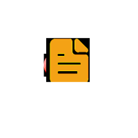

{{channel.label}} ({{channel.connected_id}})
{{channel.label}} ({{channel.connected_id}})

No Flows To Show
You haven’t created any flows yet
Showing:
Filter

{{errorMessage}}
{{successMessage}}
{{warningMessage}}
 {{channel.label}} ({{channel.connected_id}})
{{channel.label}} ({{channel.connected_id}})
You haven’t created any flows yet
Showing: